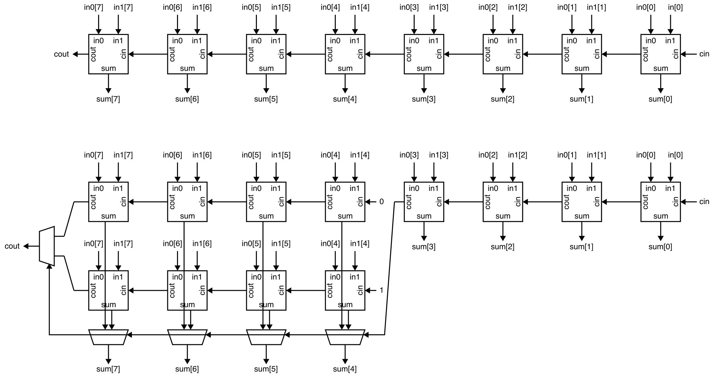
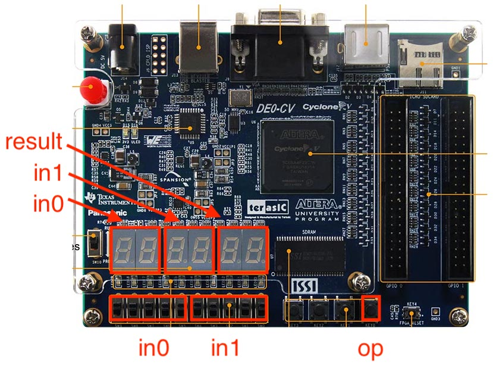
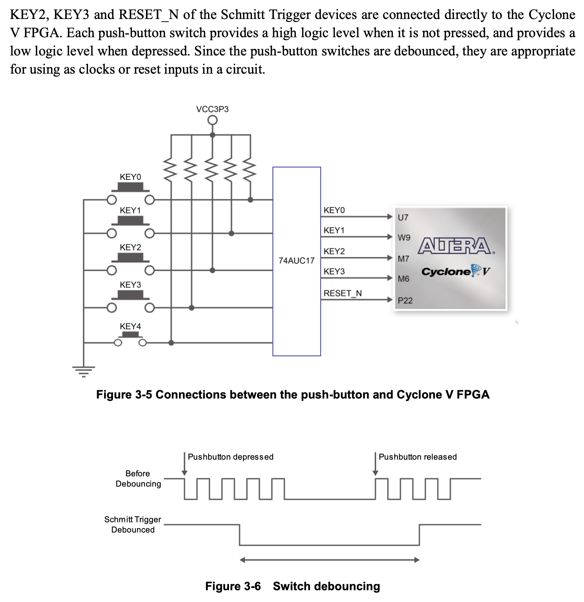

Lab 2: Two-Function Calculator (FPGA and Report)
Lab 2 is meant to give you experience designing, implementing, testing, and prototyping more complicated combinational logic using the Verilog hardware description language. In addition to leveraging the concepts from lecture across two key abstraction layers: logic gates and Boolean equations, this lab will also reinforce three key abstraction principles: modularity, hierarchy, and regularity. This lab will give students experience with several combinational building blocks including multiplexors, adders, and multipliers.
You will continue to explore a two-function calculator that takes as input two binary values and then calculates either the sum or the product of these two values. The input values and the result will be displayed on seven-segment displays using your Verilog hardware design from Lab 1. Your implementation should mostly use combinational logic gates and/or Boolean equations, but you will also start to explore very simple register-transfer-level modeling. You will also gain experience comparing implementations using gate-level and Boolean equations vs implementations using register-transfer-level modeling. You should have already worked on using simulation to test your design, so in this lab session we will explore integrating, synthesizing, analyzing, and configuring your design for an FPGA prototype. Lab 2 must be done with your lab partner.
This handout assumes that you have read and understand the course tutorials, attended the discussion sections, and successfully completed Lab 1. Here are the steps to get started:
- Step 1. Find your lab partner
- Step 2. Find a free workstation
- Step 3. Ask the TAs for a lab check-off sheet (each student needs their own check-off sheet)
Throughout this handout you will see two kinds tasks: lab check-off tasks and lab report tasks.
For each lab report task you must take some notes, save a screenshot, and/or record some data for your lab report. Students can start working on their lab report during their lab session, but will likely need to continue working on their lab report after the lab session. The lab report is due three days after your lab session at 11:59pm.
For each lab check-off task you must raise your hand and have a TA come to check-off your work. The TA will ask you the questions included as part of the lab check-off task and the assess your understanding using the following rubric: mastery; accomplished; emerging; beginning. If the TA and students together feel the students have not mastered the lab check-off task, the students are encouraged to take a few minutes and try again.
Lab Check-Off Task 1: Setup FPGA Board
Request an FPGA board from the TAs. The TAs will record the board number on your check-off sheet. Use the power cord to plug the FPGA board into an outlet, and use the USB cable to plug the FPGA board into the workstation.
1. Simulation of a Two-Function Calculator
Before starting to work on an FPGA prototype, you must make sure you have
a working Verilog hardware design that has been thoroughly tested in
simulation. One student should start VS Code on the workstation, log into
the ecelinux servers, source the setup script, and make sure their
individual remote repository is up to date.
Where XX is your group number. Now run all of the tests from a clean
build to ensure your design is fully functional.
% cd ${HOME}/ece2300/groupXX/lab2-calc
% trash build
% mkdir build
% cd build
% ../configure
% make check
Also make sure the two-function calculator interactive simulator is working.
% cd ${HOME}/ece2300/groupXX/build
% make calculator-sim
% ./calculator-sim +in0-switches=00100 +in1-switches=00011 +button=0
% ./calculator-sim +in0-switches=00100 +in1-switches=00011 +button=1
We now need to get the files for your design from ecelinux onto the
workstation. This requires multiple steps.
-
Step 1. Click Microsoft Edge on the desktop to open a web-browser on the workstation to log into GitHub and then find your repository
-
Step 2. Start PowerShell by clicking the Start menu then searching for Windows PowerShell
-
Step 3. Clone your repo onto the workstation by using this command in PowerShell (where
netidis your Cornell NetID, notice we are using https!):
-
Step 4. In the Connect to GitHub pop-up, click Sign in with your browser
-
Step 5. You may be asked for your GitHub username again and you may be asked to authorize the Git Credential Manager; click authorize git-ecosystem
-
Step 6. Verify that you have successfully cloned your repo by changing into your repo and using
treeon the workstation:
Lab Check-Off Task 2: Verify Test and Interactive Simulators
Show a TA that your hardware designs are passing all of your tests on
ecelinux. The TA will give you two decimal numbers. You should
first determine their unsigned binary representation, then determine
what the correct unsigned binary output would be if we added these
two numbers together, and finally determine what the correct unsigned
output should be if we multiplied these two numbers together. You
must determine these unsigned binary values before running the
two-function interactive simulator! Once you know these values,
then use the two-function interactive simulator to verify your work.
The TA will ask follow-up questions about the following scenarios:
- (1) addition when
in0is 31 andin1is 1 - (2) multiplication when
in0is 16 andin1is 3 - (3) multiplication when
in0is 16 andin1is 7
Be ready to explain why the calculator is producing the corresponding output for each scenario.
2. Setup Quartus Project
Click Quartus (Quartus Prime 19.1) on the desktop to start Quartus, and click Run the Quartus Prime software. You might need to try starting Quartus twice. Setup a new Quartus project using the New Project Wizard:
- Directory, Name, Top-Level Entity
- Working directory:
C:\Users\netid\lab2 - Name of this project:
lab2 - Name of top-level design entity:
lab2 - Click Next
- Working directory:
- Directory does not exist. Do you want to create it?
- Click yes
- Project Type
- Choose Empty Project
- Click Next
- Add Files
- Click triple dots to right of File name
- Click on This PC, then navigate to your cloned repo by choosing Windows (C:) > Users > netid > netid where netid is your Cornell NetID
- Shift-click on every Verilog hardware design file (do not include any test files)
- Click Open
- Click Next
- Family, Device, and Board Settings
- Click Board tab
- Family: Cyclone V
- Select DE0-CV Development Board
- Make sure Create top-level design file is checked
- Click Next
- EDA Tool Settings
- Click Next
- Summary
- Click Finish
Since we are now using RTL modeling, there is one new step from Lab 1. You must choose Assignments > Settings from the menu. Then select the category Compiler Settings > Verilog HDL Input and under Verilog version click SystemVerilog. Then click OK.
3. Synthesize and Analyze Adders
We will start by synthesizing and analyzing three different adder designs in isolation. When we say in isolation we mean that our goal is not to actually prototype these adder designs on the FPGA (e.g., demo the adders with switches and seven segment displays), but our goal is instead to perform a rigorous comparative analysis across multiple adder designs. Once we better understand the adder design space we can then select the appropriate adder for use in the final FPGA prototype.
Before starting, we want to predict the critical path for the ripple-carry and carry-select adders. Ask the TAs for a hard copy of the two block diagrams shown below. You do not need to redraw these yourself.

Lab Report Task 1: Predicted Adder Critical Paths
Clearly draw your predicted critical path on each block diagram. Save these diagrams since you will be continuing to annotate them throughout the lab.
Lab Check-Off Task 3: Discuss Predicted Adder Critical Paths
Show a TA your block diagrams with the critical paths. Explain to the TA which design should have a shorter critical path and why. How much shorter will the critical path be?
3.1. Synthesize and Analyze Ripple-Carry Adder
We will be using a slightly different approach to synthesize and analyze the adders in isolation compared to our process in Lab 1. When pushing a hardware design through the flow in isolation, we want to let the FPGA tools automatically assign the top-level ports to the FPGA pins. This will enable the FPGA to optimize this assignment improving the overall critical path and enabling a more rigorous analysis.
To synthesize and analyze the ripple-carry adder in isolation first find
the Project Navigator pane and click on Hierarchy to display the
drop-down list. Choose Files and select the AdderRippleCarry_8b_GL.v
file. Right click on the file and choose Select as Top-Level Entity.
Then click on Files to display the drop-down list again. Choose
Hierarchy and confirm that AdderRippleCarry_8b_GL is shown as the
only entity.
As in Lab 1, we need to create a timing constraint file. As mentioned in Lab 1, the FPGA tools do not synthesize the design to just run as fast as possible. The way the FPGA tools work, is that the designer provides a timing constraint on the critical path delay, and the tools work as hard as they can (but no harder!) to meet this critical path delay constraint. When finished, the design will either "meet timing" (i.e., the actual critical path delay is less than the constraint) or "not meet timing" (i.e., the actual critical path delay is greater than the constraint).
Here are the steps to create a timing constraint file:
- Choose File > New from the menu
- Click Synopsys Design Constraints File
- Click OK
- Enter the constraints shown below
- Click File > Save from the menu
- Name the file timing.sdc
- Save the file in the lab2 directory
We will use the following initial constraints:
set_max_delay -from [all_inputs] -to [all_outputs] 20
set_min_delay -from [all_inputs] -to [all_outputs] 0
These constraints tell the FPGA tools that our critical path delay constraint is 20ns and that the FPGA tools should analyze all paths from every input port to every output port.
Now use the following steps to synthesize your design and then look at the RTL viewer, technology map viewer, and chip planner.
- Choose Processing > Start Compilation from the menu
- Wait 2-3 minutes for synthesis to complete
- RTL Viewer
- Choose Tools > Netlist Viewer > RTL Viewer from the menu
- Drill down in the hierarchy to see the netlist for the 8-bit ripply-carry adder, the 4-bit ripple-carry adder, and the full adder
- Does the RTL viewer match your expectations? Where would the critical path go on this diagram?
- Choose File > Close from menu to close the RTL viewer
- Technology Map Viewer
- Choose Tools > Netlist Viewer > Technology Map Viewer (Post-Fitting)
- Drill down in the hierarchy to see the implementation of the 8-bit ripply-carry adder, the 4-bit ripple-carry adder, and the full adder
- Does the RTL viewer match your expectations? Where would the critical path go on this diagram?
- Choose File > Close from the menu to close the technology map viewer
- Chip Planner
- Choose Tools > Chip Planner from the menu
- Identify where the logic used to implement your design is located in the FPGA
- Choose File > Close from the menu to close the chip planner
The next step is to analyze the area of your design.
- Choose Processing -> Compilation Report from the menu
- Under Table of Contents choose Fitter > Resource Section > Resource Usage Summary
- Look through the report to determine the number of combinational ALUTs (configurable look-up tables) are used for your design
The final step is to analyze the timing (i.e., the critical path delay) of your design. We will analyze timing for the Slow 1100mV 85C Model which is the default choice in the Timing Analyzer.
- Choose Tools > Timing Analyzer from the menu
- Double-click Update Timing Netlist
- Choose Reports > Custom Reports > Report Timing from the menu
- Report Timing
- From: [all_inputs]
- To: [all_outputs]
- Report number of paths: 1
- Click Report Timing
- Identify the propagation delay of the displayed path
- Look at the actual critical path (i.e., Data Arrival Path) which shows the longest path from one of the inputs through your design to one of the outputs
- Choose File > Close from the menu to close the timing analyzer
Your design will almost certainly meet timing with a critical path delay constraint of 20ns. As in Lab 1, we are interested in the limit on the critical path delay (i.e., what is the true minimum critical path delay) so we can compare our unoptimized and optimized designs. To find the limit, we need to iteratively reduce the critical path timing constraint until we no longer meet timing. We can consider the shortest critical path delay while still meeting timing as the "true minimum critical path delay").
You can iteratively reduce the critical path delay, by changing 20 in the timing constraint file to something smaller. So the iterative process will look like this:
- Edit the timing constraints file to reduce the critical path delay constraint
- Choose Processing > Start Compilation from the menu
- Wait 2-3 minutes for synthesis to complete
- Analyze the area of your design
- Analyze the timing of your design
You will be working to fill in this table:
- https://docs.google.com/spreadsheets/d/1tlkaQYOx7t8CJpzAL5IsU2EbmdBQsGVKJyi_uQSu1BQ/edit?gid=0#gid=0
Make a copy of this table, and enter in the data for your ripple-carry adder with a 20ns critical path delay constraint. You can find the number of 7-input ALUts, 6-input ALUts, etc in the area report. You can save time by not generating a brand new timing report. You can instead simply use the following steps.
- Choose Processing -> Compilation Report from the menu
- Under Table of Contents choose Timing Analyzer > Slow 1100mV 85C Model > Setup Summary
- The critical path delay is just the constraint minus the slack
Then iteratively reduce the timing constraint until your design no longer meets timing. We are interested in the limit on the critical path delay (i.e., what is the true minimum critical path delay) so we can compare our unoptimized and optimized designs. To find the limit, we need to iteratively reduce the critical path timing constraint until we no longer meet timing. We can consider the shortest critical path delay while still meeting timing as the "true minimum critical path delay".
Once you have found the minimum timing constraint which still meets timing, use the Timing Analyzer to find the corresponding critical path. We want to save the timing report to a file so we can include it in our report. So when using the Timing Analyzer to create the timing report complete the following two steps:
- Check File name
- Enter file name as
AdderRippleCarry_8b_GL-critical-path.txt
Find and open this timing report text file. It should be in the lab2
subdirectory. Make sure there is only a single critical path in the
timing report text file.
Lab Report Task 2: Data Table and Critical Path Report for Ripple-Carry Adder
Save your completed data table with your analysis of the ripple-carry adder and include it in your report. Save the critical path timing report text file and include it in your report. You only want to save the Data Arrival Path from the timing report text file. Do NOT include anything else from the timing report text file. You must format the critical path with a fixed-width font and size the font such that it fits on a single page. If you do not follow this requirements then we will ignore your critical path in the lab report.
Lab Report Task 3: Actual Critical Path for Ripple-Carry Adder
Draw the actual critical path on the block diagram for the ripple-carry adder using the timing report. Label each full adder along the critical path with its corresponding delay using the timing report. Label the delay to get from the FPGA input pin to the adder and the delay to get from the adder to the FPGA output pin.
Lab Check-Off Task 4: Discuss Area and Delay Analysis for Ripple-Carry Adder
Show a TA your completed data table with your analysis for the ripple-carry adder. Show a TA the actual critical path on the block diagram for the ripple-carry adder. Clearly show how the delays in the timing report correspond to the delays through the full adders in the block diagram.
3.2. Synthesize and Analyze Carry-Select Adder
Use the same process to synthesize and analyze the carry-select adder in
isolation. Remember to change that hardware module to be the top-level
entity. So find the Project Navigator pane and click on Hierarchy to
display the drop-down list. Choose Files and select the
AdderCarrySelect_8b_GL.v file. Right click on the file and choose
_Select as Top-Level Entity_. Then click on _Files_ to display the
drop-down list again. Choose _Hierarchy_ and confirm thatAdderCarrySelect_8b_GL` is shown as the only entity. Remember to reset
the timing constraint back to 20ns.
Go through the same process of looking at the RTL Viewer, Technology Map Viewer, and the Chip Planner. Use the same process to iteratively reduce the critical path delay, by changing 20 in the timing constraint file to something smaller. The iterative process will look like this:
- Edit the timing constraints file to reduce the critical path delay constraint
- Choose Processing > Start Compilation from the menu
- Wait 2-3 minutes for synthesis to complete
- Analyze the area of your design
- Analyze the timing of your design
You will be continuing to to fill in this table:
- https://docs.google.com/spreadsheets/d/1tlkaQYOx7t8CJpzAL5IsU2EbmdBQsGVKJyi_uQSu1BQ/edit?gid=0#gid=0
Once you have found the minimum timing constraint which still meets timing, use the Timing Analyzer to find the corresponding critical path. We want to save the timing report to a file so we can include it in our report. So when using the Timing Analyzer to create the timing report complete the following two steps:
- Check File name
- Enter file name as
AdderCarrySelect_8b_GL-critical-path.txt
Find and open this timing report text file. It should be in the lab2
subdirectory. Make sure there is only a single critical path in the
timing report text file.
Lab Report Task 4: Data Table and Critical Path Report for Carry-Select Adder
Save your completed data table with your analysis of the carry-select adder and include it in your report. Save the critical path timing report text file and include it in your report. You only want to save the Data Arrival Path from the timing report text file. Do NOT include anything else from the timing report text file. You must format the critical path with a fixed-width font and size the font such that it fits on a single page. If you do not follow this requirements then we will ignore your critical path in the lab report.
Lab Report Task 5: Actual Critical Path for Carry-Select Adder
Draw the actual critical path on the block diagram for the carry-select adder using the timing report. Label each full adder and 1-bit multiplexor along the critical path with its corresponding delay using the timing report. Label the delay to get from the FPGA input pin to the adder and the delay to get from the adder to the FPGA output pin.
Lab Check-Off Task 5: Discuss Area and Delay Analysis for Both Adders
Show a TA your completed data table with your analysis for the carry-select adder. Show a TA the actual critical path on the block diagram for the carry-select adder. Clearly show how the delays in the timing report correspond to the delays through the full adders and 1-bit multiplexors in the block diagram. Use your experimental data to quantitatively explain to the TA the trade-offs between these two adders. Which adder is smallest? By what percentage is the area decreased? Which adder is the fastest? By what percentage is the critical path decreased?
3.2. Synthesize and Analyze RTL Adder
Use the same process to synthesize and analyze the carry-select adder in
isolation. Remember to change that hardware module to be the top-level
entity. So find the Project Navigator pane and click on Hierarchy to
display the drop-down list. Choose Files and select the Adder_8b_RTL.v
file. Right click on the file and choose _Select as Top-Level Entity_.
Then click on _Files_ to display the drop-down list again. Choose
_Hierarchy_ and confirm thatAdder_8b_RTL` is shown as the only entity.
Remember to reset the timing constraint back to 20ns.
Go through the same process of looking at the RTL Viewer, Technology Map Viewer, and the Chip Planner. Look closely at the RTL viewer. What kind of adder do the FPGA tools seem to be using?
Use the same process to iteratively reduce the critical path delay, by changing 20 in the timing constraint file to something smaller. The iterative process will look like this:
- Edit the timing constraints file to reduce the critical path delay constraint
- Choose Processing > Start Compilation from the menu
- Wait 2-3 minutes for synthesis to complete
- Analyze the area of your design
- Analyze the timing of your design
You will be continuing to to fill in this table:
- https://docs.google.com/spreadsheets/d/1tlkaQYOx7t8CJpzAL5IsU2EbmdBQsGVKJyi_uQSu1BQ/edit?gid=0#gid=0
Once you have found the minimum timing constraint which still meets
timing for the carry-select adder, use the Timing Analyzer to find the
corresponding critical path. Remember to output the timing report to a
text file when using the Timing Analyzer. Find and open this timing
report text file. It should be in the lab2 subdirectory. Make sure
there is only a single critical path in the timing report text file. Look
very closely at this critical path and compare it to the critical path
for the ripple-carry and carry-select adders.
We are going to do something a little different to help us understand the critical path. Right click on the Data Arrival Path area and then choose Locate Path > Locate in Technology Map Viewer. This is now showing a diagram illustrating where the critical path goes through various logic gates on the FPGA. What kind of adder do the FPGA tools seem to be using?
Lab Report Task 6: RTL Viewer and Critical Path Diagram for RTL Adder
Save a screenshot of the RTL viewer for Adder_8b_RTL and a
screenshot of the critical path located in the technology map viewer
for your lab report. Press the Fn + Print Screen key to save a
screenshot to the clipboard, then paste the screenshot into a Google
Doc and crop appropriately for your lab report.
Lab Report Task 7: Data Table and Critical Path Report for RTL Adder
Save your completed data table with your analysis of the RTL adder and include it in your report. Save the critical path timing report text file and include it in your report. You only want to save the Data Arrival Path from the timing report text file. Do NOT include anything else from the timing report text file. You must format the critical path with a fixed-width font and size the font such that it fits on a single page. If you do not follow this requirements then we will ignore your critical path in the lab report.
Lab Check-Off Task 6: Discuss Area and Delay Analysis for All Adders
Show a TA your completed data table with your analysis for the RTL adder. Explain to the TA what kind of adder you think the FPGA tools are using to implement the RTL adder. Use your experimental data to quantitatively explain to the TA the trade-offs between all three adders. Which adder is the smallest? Which adder is the fastest? What conclusions can we draw in terms of how much effort we should spend trying to implement building blocks using a gate-level implementation and/or Boolean equations in our Verilog hardware designs?
4. Synthesize and Analyze Multipliers
We want to do a similar comparison between our gate-level and RTL multipliers. To save you time, we have gone ahead and done the iterative sweep to find a reasonable timing constraint for both multipliers. Go ahead and determine the area and critical path delay for both multipliers using these constraints:
Multiplier_2x8b_GL: 16nsMultiplier_2x8b_RTL: 13ns
If one of your designs does not meet timing with these constraints increase the constraint by 1ns and try again.
Lab Report Task 8: Data Table and Critical Path Report for Multipliers
Save your completed data table with your analysis of both multipliers. Save the critical path timing report text files for both multipliers and include them in your report. You only want to save the Data Arrival Path from the timing report text file. Do NOT include anything else from the timing report text file. You must format the critical path with a fixed-width font and size the font such that it fits on a single page. If you do not follow this requirements then we will ignore your critical path in the lab report.
Lab Check-Off Task 7: Discuss Area and Delay Analysis for Multipliers
Show a TA your completed data table with your analysis for both multipliers. Use your experimental data to quantitatively explain to the TA the trade-offs between all these two multipliers. Which adder is smallest? By what percentage is the area decreased? Which adder is the fastest? By what percentage is the critical path decreased? What conclusions can we draw in terms of how much effort we should spend trying to implement building blocks using a gate-level implementation and/or Boolean equations in our Verilog hardware designs?
5. Integrate, Synthesize, and Configure Two-Function Calculator FPGA Prototype
We now have a fully verified Verilog hardware design, and we have finished a rigorous comparative analysis of the area and timing of both the adders and multipliers. The last step is to integrate, synthesize, and configure the FPGA with our design and demonstrate the final FPGA prototype!
5.1. Integrate
We need to change the top-level entity to be DE0_CV_golden_top.v. Find
the Project Navigator pane and click on Hierarchy to display the
drop-down list. Choose Files and select the DE0_CV_golden_top.v file.
Right click on the file and choose Select as Top-Level Entity. Then
click on Files to display the drop-down list again. Choose Hierarchy
and confirm that DE0_CV_golden_top is shown as the only entity.
The New Project Wizard creates a top-level Verilog module for us which
has ports for all of the switches, LEDs, seven-segment displays, and pins
on the FPGA development board. We need to instantiate
CalculatorDisplay_GL in this top-level Verilog module and connect the
ports. Students are responsible for figuring out the appropriate
top-level port connections to meet the following specification.
- The left five switches are for
in0 - The right five switches are for
in1 - The two seven-segment displays on the left are for
in0 - The two seven-segment displays in the middle are for
in1 - The two seven-segment displays on the right are for the result
- The right-most push button is for
op - By default calculator should perform addition, pressing the button should perform multiplication

Look carefully at the labels on the board to figure out how the switches, buttons, and seven-segment displays correspond to ports in the top-level Verilog module. Use the following steps when you are ready to integrate the calculator.
- Double-click on DE0_CV_golden_top
- Instantiate CalculatorDisplay_GL in the top-level module
- Connect the ports
- Choose File > Save from the menu
5.2. Synthesize
You will need to update the timing constraint file as follows:
set_max_delay -from [get_ports {SW* KEY*}] -to [get_ports HEX*] 22
set_min_delay -from [get_ports {SW* KEY*}] -to [get_ports HEX*] 0
Then choose Processing > Start Compilation from the menu to synthesize your design. Open the Chip Planner to see where the calculator is located on the FPGA:
- Choose Tools > Chip Planner from the menu
- Identify where the logic used to implement your design is located in the FPGA
- Choose File > Close from the menu to close the chip planner
Feel free to also take a look at the area and critical path for the complete calculator.
Lab Report Task 9: Calculator Chip Planner
Save a screenshot of the chip planner for CalculatorDisplay_GL
Press the Fn + Print Screen key to save a screenshot to the
clipboard, then paste the screenshot into a Google Doc and crop
appropriately for your lab report. You must highlight where your
calculator is located on the FPGA.
5.3. Configure
Now we are finally ready to configure the FPGA for our calculator demo!
- Choose Tools > Programmer from the menu
- Click Hardware Setup
- Currently selected hardware: USB-Blaster [USB-0]
- Click Close
- Click Start
Test out your calculator. Note that the specification requires that your calculator performs addition by default and only performs multiplication when the button is pressed. Consider this excerpt from the data-sheet for our FPGA boards.

Given this new information you may need to add a logic gate to the top-level Verilog file to ensure your calculator correctly implements the specification.
Lab Check-Off Task 8: Final Two-Function Calculator Demo
Show a TA your final two-function calculator demo. The TA will ask you to enter two binary numbers using the switches. You must determine the correct decimal values first, tell the TA what the correct decimal value should be for both addition and multiplication, and only then set the switches to confirm correct operation. Your calculator must display the digits in the correct locations and perform addition by default and multiplication when the button is pressed.
Lab Check-Off Task 9: Turn In FPGA Board
When you are finished with your demo, pack up your FPGA development board. Neatly put the board, power cable, and USB cable back in the box. Return the box to a TA who will then record the board number on your check-off sheet, initial the final check-off, and then collect your check-off sheet.
6. Lab Report Submission
Students should work with their partner to prepare a short lab report that conveys what they have learned in this lab assignment. The lab report should start with no more than two pages of text. Students should include all figures, tables, and diagrams after these two pages in an appendix. The appendix can be as many pages as necessary. Do not interleave the text, figures, tables, and diagrams. There should be two pages of text and then the appendix with all of the text, figures, tables, and diagrams.
There are no restrictions on font size, margins, or line spacing, but please make sure your report is readable. We recommend using 10pt Times or 10pt Palintino with 0.75in to 1in margins. Please make sure you include a title, your names, and your NetIDs at the top of the first page. Do not include a title page.
The lab report must include the following numbered sections. Please number your sections and use these specific titles. Please follow the guidelines on the number of paragraphs, the content of each paragraph, and which figures/tables to include. Some paragraphs might just be 2-3 sentences.
Section 1. Introduction (one paragraph)
- Include 2-3 sentences explaining what the lab involves
- Include one sentence explaining the purpose of this lab (why are students doing this lab?)
- Include one sentence explicitly connecting the lab to one or more lecture topics; be specific on which lecture topics this lab reinforces with experiential learning
Section 2: Testing Strategy (one paragraph)
- Include one sentence about the importance of a comprehensive testing strategy
- Include 1-2 sentences about what is exhaustive testing and which modules used exhaustive testing
- Include 2-3 sentences about what is directed testing and which modules used directed testing; mention specific kinds of directed test cases you included
- Include 2-3 sentences about what is random testing and which modules used random testing; mention specific kinds of random test cases you included
Section 3: Comparative Analysis (three paragraphs)
-
Paragraph 1: Adder Area Comparison
- Include a sentence referencing the area data in the FPGA data table for all three adder designs
- Include 1-2 sentences comparing the area of the ripple-carry adder to the carry-select adder; you must explain why the area of one adder is more or less than the other adder
- Include 1-2 sentences comparing the area of the RTL adder to the other two adders; you must try your best to explain why the area of the RTL adder is more or less than the other adders
-
Paragraph 2: Adder Delay Comparison
- Include a sentence referencing the delay data in the FPGA data table for all three adder designs
- Include a sentence describing where the critical path goes in detail for the ripple-carry adder by referencing your timing report and your annotated block diagram
- Include a sentence describing where the critical path goes in detail for the carry-select adder by referencing your timing report and your annotated block diagram
- Include 1-2 sentences comparing the critical path delays for the ripple-carry adder and the carry-select adder; you must explain why the delay of one adder is more or less than the other adder
- Include 1-2 sentences comparing the delay of the RTL adder to the other two adders; you must try your best to explain why the delay of the RTL adder is more or less than the other adders
-
Paragraph 3: Multiplier Comparison
- Include a 1-2 sentences comparing the area of the gate-level multiplier to the RTL multiplier
- Include a 1-2 sentences comparing the delay of the gate-level multiplier to the RTL multiplier
- It might be hard to deeply understand why the area and/or delay of one multiplier is more or less than the other, so it is fine to just summarize your results
Section 4: Conclusion (one paragraph)
- Include 2-3 sentences that summarizes all of the data and analysis in this lab assignment
- Include a sentence that draws a high-level conclusion; how will what you have learned impact your design work throughout the rest of the semester?
Appendix
- FPGA Data Table
- Block diagram for ripple-carry adder with highlighted critical path and annotated delays
- Block diagram for carry-select adder with highlighted critical path and annotated delays
- RTL Viewer for RTL adder
- Critical Path Diagram Located in Technology Map Viewer for RTL Adder
- Chip planner for calculator with logic highlighted
- Critical path report for ripple-carry adder (1 page max, fixed width font!)
- Critical path report for carry-select adder (1 page max, fixed width font!)
- Critical path report for RTL adder (1 page max, fixed width font!)
- Critical path report for array multiplier (1 page max, fixed width font!)
- Critical path report for RTL multiplier (1 page max, fixed width font!)